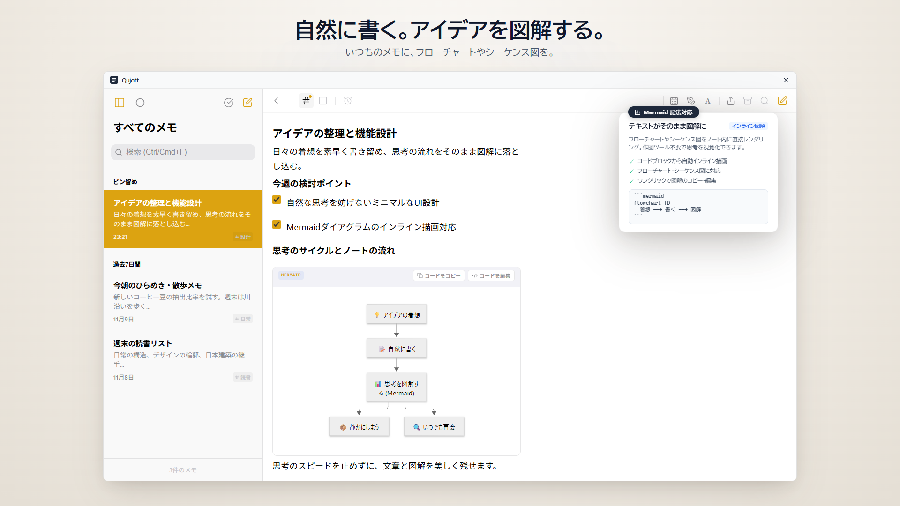
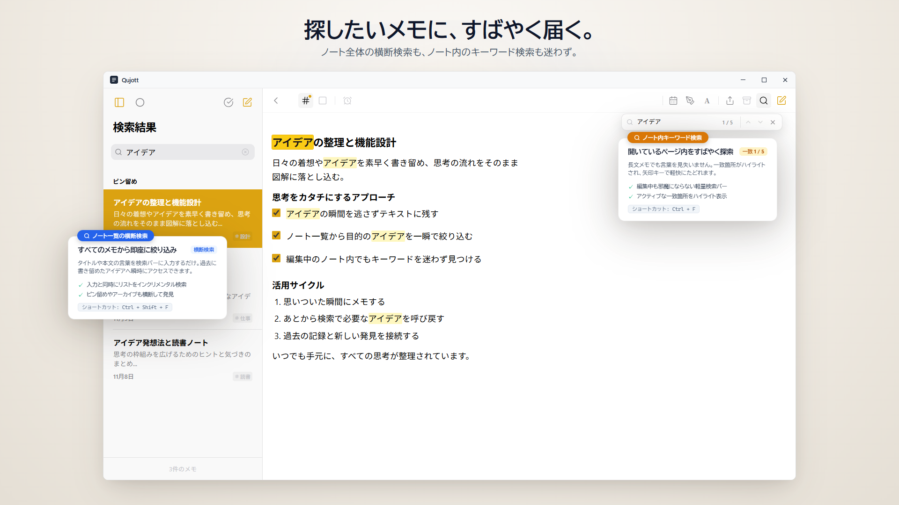

Qujott
思いついた瞬間に、気軽に書き留め、
あとから眺められる。
Qujott（クジョット）は、ノートの気軽さと見やすさ、テキストエディタの自由さと汎用性を備えた、軽量な雑記帳です。
整理はあとで。まずは、思考をすぐそばに。
標準的なMarkdown形式に対応。テキストファイルとして、自由に保存・編集できます。

思考とメモ一覧が自然に並ぶ、端正で静かな2ペイン空間
机の横の紙のメモ帳のように、すぐ書けること。
Qujottは、複雑なタスク管理や巨大な知識ベースを作るためのツールではありません。
机の横に置いてある紙のメモ帳のように、思いついたその瞬間に迷わず書き始められることだけにこだわりました。
事前のフォルダ分けを悩む必要も、タグ付けを強制されることもありません。
頭に浮かんだ言葉をそのまま書き留め、すぐそばに置いておく。整理はあとから眺めながら行えます。
メモをそっとしまい、必要なときに再会する。
書き終えたメモは、削除することなく視界から外す「しまう（Put Away）」ですっきりと整えられます。
「あとで見る（Revisit）」を設定すれば、今日・明日・来週など、選んだタイミングで静かにリストの上部へ戻ってきます。通知で急かされることなく、自然なリズムで思考と再会できます。

手元を散らかさない「しまう」と、必要な時期に自然に再会できる「あとで見る」
書くことだけに、静かに没頭できる。
サイドバーを閉じて1ペインに切り替える「Focus Mode」を搭載。
余計なUI要素を視界から削ぎ落とし、純粋に思考を紡ぐことだけに集中できる静かな執筆空間を提供します。

余計な装飾を削ぎ落とし、書くことだけに没頭できるFocusモード
すべてのメモは、あなたのもの。
Qujottで書いたメモはすべて標準的なMarkdown形式（.md）で保存されます。
独自形式での囲い込み（ロックイン）はありません。他のエディタでいつでも閲覧・編集でき、自由にエクスポートやバックアップが可能です。

すべてのメモは標準Markdown（.md）で保存。いつでも自由に閲覧・エクスポート可能
手元のMarkdownファイルを、そのまま開いて編集。
既存のMarkdownファイルをQujottで直接開き、編集してそのまま元のファイルへ上書き保存できます。
ファイルの取り込みや形式変換は一切不要。軽快な単機能Markdownエディタとしても日常的にご活用いただけます。

既存のMarkdownファイルを直接開き、その場で編集・上書き保存（Editor Mode）
保存先は、あなたが自由に決める。
メモの保存先は、PC上のローカルフォルダ、既存のクラウド同期フォルダ、外付けドライブなど自由に選べます。
アカウント登録なしで、選んだフォルダにメモを保存して使い始められます。

PC上のローカルフォルダ、同期フォルダ、外付けドライブなど保存先を自由に選択
書く空間を、自分好みの佇まいに。
すりガラス効果が美しく溶け込む情景テーマ「Atmosphere Scenes（Sakura等）」や用紙テーマで、毎日の書く空間を落ち着いた佇まいに仕立てられます（Qujott Pro 有料アドオン）。
さらにUI表示倍率（80%〜160%）の調整にも対応し、あらゆる画面環境で見やすく快適にカスタマイズできます。

すりガラスが美しく溶け込むAtmosphere Scenes（Sakura）と、画面に合わせた表示倍率調整
自然に書く。必要なときは図解する。
テキストで思考を書き留める延長で、同じMarkdownノート内にフローチャートやシーケンス図などのMermaid図をそのまま表示できます。
書式メニューからの雛形挿入にも対応し、図作成のために別のアプリを開く必要はありません。

いつものMarkdownメモに、Mermaidによるフローチャートやシーケンス図をそのまま表示
書きためた思考に、すぐ届く。
ノート一覧からタイトルや本文をまとめて探せる横断検索（Ctrl+Shift+F）と、いま開いているノート内の語句をすぐ見つけられるノート内検索（Ctrl+F）の両方に対応。
書きためたメモの海から、必要な思考へ迷わず再会できます。

一覧からの横断検索（Ctrl+Shift+F）とノート内検索（Ctrl+F）で、探したいメモにすばやくアクセス